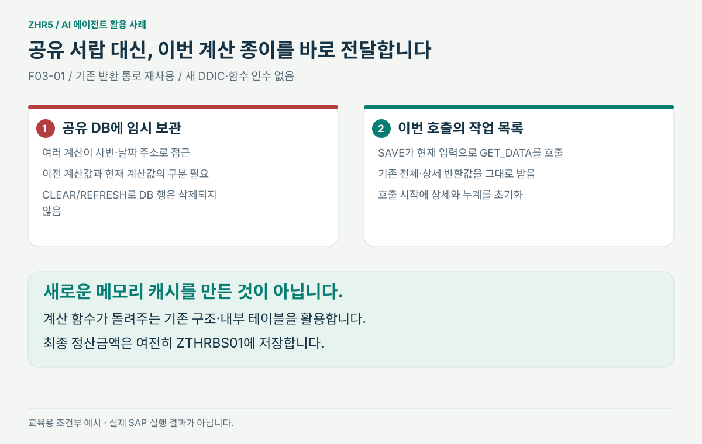

업무 설명과 실제 경로를 나누다
반기 ×2, 휴휴 사전 정산이라는 업무 설명에서 출발했습니다. AI는 선택 CW와 통상 시간외 경로를 구별해야 한다고 기록했습니다.
같은 용어를 쓴다고 같은 코드 경로는 아닙니다.
사용자의 업무 기억, AI의 소스 추적, 반복 질문으로 좁힌 오류 후보.
휴일 이틀의 대휴 정산 사례를 통해 “계산 → 전달 → 저장”을 구분해 봅니다.
사용자의 구체적인 질문으로 AI의 예시와 적용 범위를 바로잡고, 실제 코드로 확인한 것과 아직 실행하지 않은 것을 구분한 사례입니다. 사용자의 오해만을 원인으로 돌리지 않습니다. 발견한 위험도 실제 반기 보정 건의 원인으로 확정하지 않았습니다.
기존 임시 DB는 사번·날짜로 금액을 보관했습니다. 이번 제안은 기존 함수가 돌려주는 전체·상세 결과를 사용해, 현재 계산을 같은 저장 호출에 직접 전달합니다. 시간 분할·지급 산식·정산 확정취소는 유지합니다.

반기 ×2, 휴휴 사전 정산이라는 업무 설명에서 출발했습니다. AI는 선택 CW와 통상 시간외 경로를 구별해야 한다고 기록했습니다.
같은 용어를 쓴다고 같은 코드 경로는 아닙니다.
AI는 확정·취소도 후보로 제시했습니다. 사용자가 “확정 몇 달 전부터 틀린 값”이라고 알려 줘 입력·저장을 우선 조사하게 됐습니다.
사용자의 현장 시간 정보가 원인 후보를 줄입니다.
토8+일6과 토10+일6을 혼동하면 설명이 틀립니다. 사용자의 질문으로 실제 분할 코드와 선택 경로의 옵션까지 확인했고, 선택 CW에는 해당 분할 위험을 적용하지 않도록 정정했습니다.
그럴듯한 예시보다 호출 조건과 원래 시간을 먼저 확인합니다.
분할 전후 실비 합계가 같더라도 금액 전달은 실패할 수 있습니다. 비휴휴 J가 존재한다는 사실 자체도 오류의 증거가 아니라는 점을 확인했습니다.
계산 정확성과 전달 정확성을 따로 검사합니다.
시간 분할·정산 확정취소·비휴휴 산식은 유지하고, 날짜 집계·현재 결과 전달만 보완하도록 범위를 좁혔습니다. 원본을 고치지 않은 제안 사본과 HTML 비교를 작성했습니다.
AI가 문제 후보를 찾더라도 실제 변경 범위는 업무 담당자가 결정합니다.
사용자는 임시 기록 뒤 즉시 읽고 삭제한다고 생각했다고 밝혔습니다. AI는 화면 계산의 쓰기와 SAVE의 삭제가 다른 시점임을 추적했습니다. 실제 화면 요청 사이의 잔존 여부는 미확인으로 남겼습니다.
코드에 DELETE가 있다는 사실보다 언제, 어떤 행에 실행되는지가 중요합니다.
PORTAL_HANDOFF.md에 권장 구성과 자료별 역할을 적었습니다. 기계 판독용 사례 데이터, 원문 메시지 JSON, 수정 구간별 발견 과정를 함께 사용할 수 있습니다.